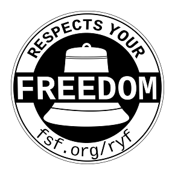

FSF "Respects Your Freedom" 硬體認證計畫

軟體自由並不僅限於軟體的自由，也包括了硬體的自由。自由軟體基金會 (Free Software Foundation, FSF) 於日前推出了新的 logo 強調 "Respects Your Freedom" 電腦硬體設備認證計畫，鼓勵尊重使用者自由的硬體生產。
自由硬體能確保並沒有任何元件可能監視或限制使用者存取檔案，令使用者的生活更簡單，也能確認使用者是否安裝非自由軟體。
FSF 表示，能夠擁有電腦或設備完全的控制權、知道自己是否被監視或追蹤、不需授權就能夠執行任何軟體、自由的與朋友分享檔案不用擔心數位著作權管理 (Digital Rights Management, DRM)，這些都是數以百萬人所關心的技術。不幸的是由於使用者的需求，硬體製造商目前仍仰賴非自由軟體公司。
其實大約在兩年前，FSF 的硬體認證計畫就開始推動，包括認證的初始條件發布並蒐集各界的意見，現今全套規格的認證也可以在非營利組織的網站中找到。
根據新的方案進行認證，硬體設備必須使用自由軟體、支援自由的數據格式，並使用自由的工具，通過此認證的製造商便能在產品上顯示 FSF 新的 "Respects Your Freedom" logo 以及 FSF 的相關資料，對於製造商推廣產品便能有相當的幫助。
相關網址
- FSF 推出硬體認證計劃
https://www.muktware.com/4550/fsf-launches-hardware-certification-program - Respects Your Freedom 硬體設備認證
https://www.fsf.org/resources/hw/endorsement/respects-your-freedom - FSF 的新 logo 強調硬體 Respects Your Freedom
https://www.pcworld.com/article/2011712/new-fsf-logo-highlights-hardware-that-respects-your-freedom.html